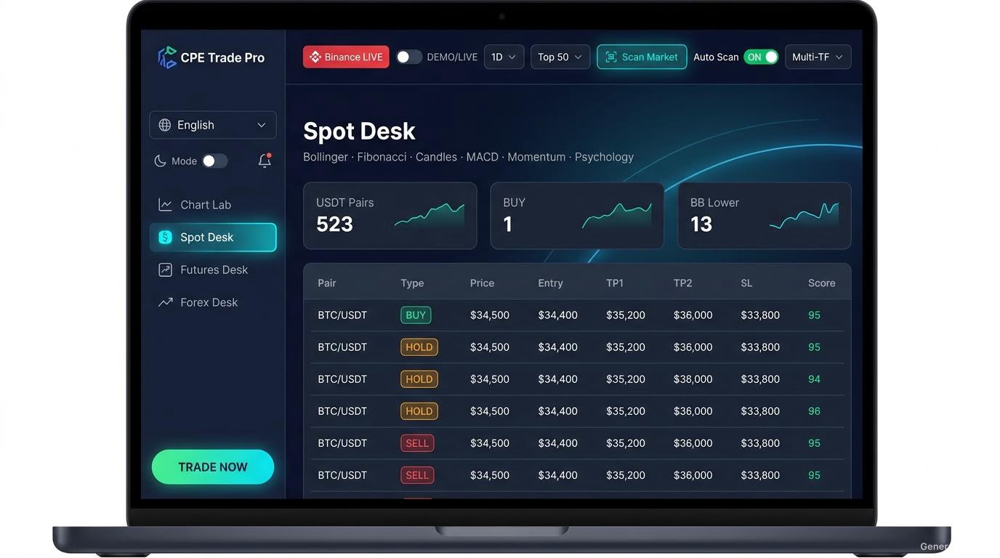

Understand every signal.
Practice before you risk.
Spot, Futures and Forex signals with BUY / SELL / HOLD, entry / stop / target levels and a 0-10 quality score built from five measurable factors. Trade auto or manual across Binance, Coinbase, Bybit and 11 more platforms from one app. Review eligible setups as $10 DEMO paper trades, or trade LIVE with your own exchange or broker connection. Use it in 15 interface languages.
*Combined unique Binance Spot and USDT perpetual symbols; exchange listings change. Past signal results do not guarantee future performance.

*Unique active Binance symbols combined across Spot and USDT perpetual markets. Listing counts may change. Past signal results do not guarantee future performance.
Use CPE Trade Pro in your own language
The whole interface — menus, signals, guides and the learning academy — can be switched into any of 15 languages, and you can change it anytime in settings. Product and exchange names stay in their original form.
Everything a trader needs, in one terminal
No more jumping between apps. Each part of CPE Trade Pro has its own page — features, app screens, paper trades, the signal guide, markets, academy, packages and downloads.
Everything in one terminal
Live signals, auto analysis, prediction lines, manual and auto trade, positions, patterns, journal and more.
Open features → App screensSee the app in action
Spot Desk, Futures, Chart Lab, Signals, Positions and more — a full walkthrough of the screens.
View screens → Paper trades$10 paper trading & calculator
See how eligible signals are tracked on a fixed $10 DEMO stake, with a fee-adjusted calculator you can try.
Open paper trades → Signal guideRead every signal
BUY / SELL / HOLD, caution and strong grades, and the 0-10 score built from five measurable factors.
Open signal guide → MarketsSpot, Futures & Forex
Analysis across 590+ crypto pairs and supported Forex pairs and metals such as XAUUSD.
Open markets → AcademyLearning academy & guides
Indicators, signals, Forex, risk, journaling and practice — plus free plain-English guides.
Open academy → LanguagesUse it in your language
15 interface languages including English, Sinhala, Tamil, Hindi, Chinese, Arabic and more.
See 15 languages → PackagesLicences & packages
Free 7-day trial, then a device-bound licence. Ask about options on WhatsApp.
Open packages → DownloadDownload for your device
Windows, macOS (Intel & Apple Silicon), Android and iPhone — with per-platform install steps.
Open download → Guides & blogLearn the method behind the signal
Market structure, order blocks, fair value gaps, liquidity and indicators — the full guide index.
Browse all guides →What CPE Trade Pro is — and what it never does
Clear answers before you download. If anything here is unclear, ask us and we will explain it in writing.
Frequently asked questions
Is CPE Trade Pro free to download?
Yes. The app is free to download and install. To unlock full features you activate a license key — contact us on WhatsApp for packages.
Which app builds can I download?
Windows setup, macOS Intel and Apple Silicon DMGs, Android APK, and an unsigned iPhone IPA are listed on the download page. Android is now v6.3.2 (faster scans, installs on Android 5.0 and up — including old Samsung J2); Windows, macOS and iPhone are v6.3.0. A license is device-bound.
How does the $10 paper signal tracking work?
The app records eligible BUY / SELL signals with valid entry, stop and target levels using a fixed $10 paper stake. It follows prices and records the outcome in Signal History. DEMO paper tracking does not place a real order. See paper trades.
Does the website calculator use live prices?
No. The calculator is an example: enter hypothetical entry and exit prices to see a fee-adjusted estimate. It is separate from the app's automatic signal history.
Are signal scores guarantees?
No. The 0-10 quality score summarizes five evidence groups measured from the chart, trend, momentum, volume and levels. It describes the setup's evidence — it is not a win rate, a probability of profit, or an audited performance record. Every market setup can lose. Signal History shows how past signals resolved on a fixed $10 paper stake; that is a record of past behaviour, not a promise about the future.
Can I short a Spot signal?
No. Spot is long-only in this app. A SELL/short-side setup applies only to a suitable Futures or supported Forex workflow; leverage can magnify losses.
Can the app trade automatically?
Yes. Auto Trade sessions open trades for the signal grades you choose, with money management, a martingale ladder, auto take-profit and auto trail TP + SL, and Stop All ends them. You can also trade yourself with Manual Trade. Real orders are placed only in LIVE mode with your own connected platform credentials — in DEMO everything stays paper-only.
How do I install the iPhone build?
Download the unsigned IPA, install Sideloadly on a Windows PC or Mac, connect the iPhone by USB, and sign it with your Apple ID. A free Apple ID signature expires after 7 days and must be renewed. App Store distribution is not included. Full steps are on the download page.
Why does free iPhone signing expire after 7 days?
iPhones require apps to be signed. With a free Apple ID, Sideloadly signs the app for 7 days. After 7 days, simply reconnect and re-sign (1 minute). This is an Apple rule, not a limitation of CPE Trade Pro.
How do I get my referral link?
Open the app → License tab → your unique referral link is shown there. Share it; rewards are tracked inside the app.
Which languages can I use?
15 languages: English, Sinhala, Tamil, Hindi, Chinese, Arabic, Spanish, Portuguese, Russian, Japanese, Korean, French, German, Indonesian and Thai. Arabic uses a right-to-left layout. See all 15 languages.
Which markets are covered?
Crypto Spot and Futures market analysis, plus supported Forex pairs and metals such as XAUUSD. Exact data and live-order support depends on the selected connection. See markets.
Does CPE Trade Pro notify me about upcoming crypto listings?
The app reads Binance announcements for upcoming Spot and Futures listings, sorts future listings by scheduled opening, and shows a countdown. When an announcement has no exact opening time, the displayed time is marked as an estimate. While the app is running with notifications enabled, it can alert you when an announced listing is detected as live. A listing alert is not a buy signal or a profit prediction. New listings can be volatile and illiquid, and losses are possible.
How do I activate after downloading?
Open the app → License tab → copy your Machine ID → WhatsApp it to +94774940944 to ask about license options. Licenses are device-bound.
Ready to trade smarter?
Download CPE Trade Pro free and put every feature to work — 590+ crypto pairs and Forex, BUY / SELL / HOLD signals with a 0-10 quality score, LIVE and DEMO modes, auto or manual trading, real signal history, a built-in academy and 15 interface languages all in one app. Practise in DEMO first, then activate when you are ready.